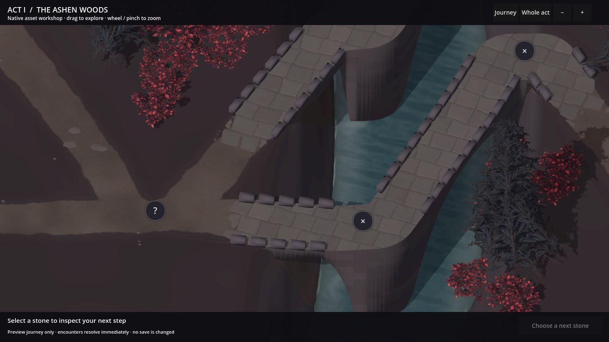
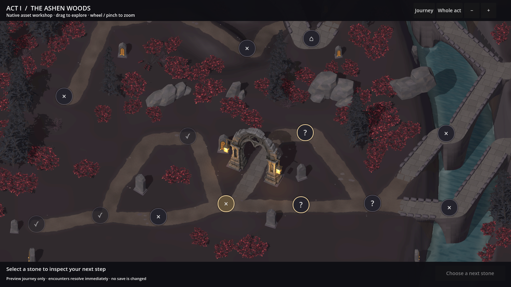

The river, flowing.
A fuller channel of cold, dark water, with a gentle current, soft sky reflections and small wakes around the stone supports. Shallow water meets wet stone along the banks.
Flow, light and depth.
A closer inspection camera makes the surface movement easier to see. The second film shows the same water at the established journey camera.
Watch at the journey camera
A filled channel
The water sits higher against the banks, with a darker centre and more transparent shallows.
A gentle current
Fine ripples follow the channel. Small wakes and broken foam gather around the immersed stone supports.
Quiet reflections
Soft sky light moves across the surface, while the bridges cast real shadows over the water.
The same places, with water.
Switch between 10 and 09 at the same camera position. Open any still at full resolution.
The water reaches the river banks beneath the repaired road and bridge joints. Look at the shallow edge, soft reflections and shadow under the stonework.
{kind=link}

Through the Ashen Woods.
The river joins the existing woodland, gateway and road system. All twelve natural model types remain.

Checks behind this revision
The channel passes 13,818 water-surface probes and 24,381 comparisons with the rendered riverbed. Its checked wet width is at least 4.3 m. All 556 route samples in the river corridor remain above the water, and all three dry underpasses lie outside the water surface.
The films are unretouched native frames at the material’s actual pace, encoded as eight-second loops. Phone, pad and desktop reference dimensions also pass drag, wheel zoom, node selection and legal preview travel. Device performance and wider campaign qualification remain part of production.
{kind=link}
{kind=link}
{kind=link}